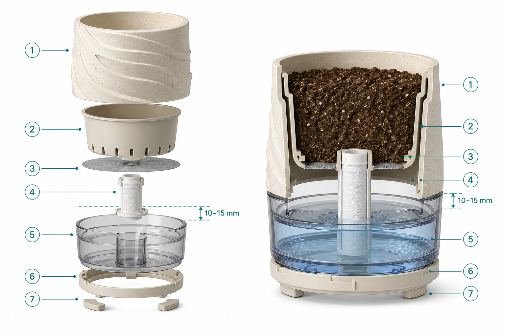

01实体产品方案 · 配套小程序
MAOYUQING / PORTFOLIO碳循花园
想养花，
也要允许偶尔忘记。
用再生塑料制作自浇水花盆，为忙碌、出差或不熟悉养护的人降低养花门槛。花盆是主要售卖产品，小程序提供养护查询与成长记录。

解决的问题忘记浇水，也能继续养花


回收塑料重新进入消费场景，也为企业 ESG 提供一个能被用户看到和使用的产品载体。
配套小程序花盆卖出以后，服务才刚开始
养护查询 · 植物记录 · 扫码体验